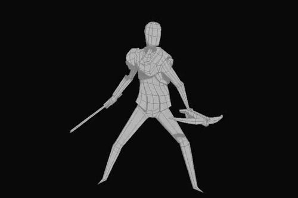
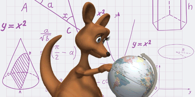
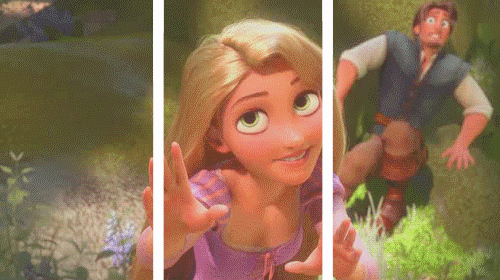
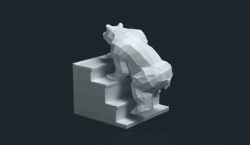

Ways to use 3D animation
3D animation has evolved far beyond its origins in gaming, TV shows, and movies. Today, it’s a versatile tool used across numerous industries for diverse purposes. From immersive corporate presentations to cutting-edge medical research, 3D animation is revolutionizing how we visualize and interact with information.
A 3D animated character is more vivid and engaging, almost like playing with a toy. This makes 3D animation very useful for kids’ entertainment. The "Frozen" movies are a great example. Elements of the story, like how the main character Elsa can transform objects into ice, become more enchanting in 3D.

Gaming
3D animation can give a more lifelike feeling to video games, intensifying the action for the player. When you’re battling an enemy or racing through an obstacle course, having the 3D sensation can make for a far more thrilling experience. 3D animation can also be used with virtual reality (VR) and augmented reality (AR) special effects, giving the player the sense that they’re inside the world in real time.
“Horizon Zero Dawn” is one example of how a video game animation can leverage 3D technology. The action game involves a lot of physicalities, from avoiding traps to solving puzzles and battling enemies. The combatant robots in the game are far more intimidating in 3D, making for a more adrenaline-pumping experience.
Marketing
3D animation can also prove valuable in marketing. For example, a marketer might use this technique to show off all the product’s features as they would appear in real life. Audiences can get a better sense of what the goods look like.
Brands can also use 3D animation to showcase products through tutorials or demos, and to create more captivating content in general. In a world in which companies are constantly jockeying for the audience’s limited attention, a compelling video ad made using 3D techniques can keep consumers interested.
This ad for the online casino app Borgata is a great example of the visual intensity 3D techniques can create to boost conversion rates.


3D animation process
3D techniques can take an animated figure that appears on a two-dimensional screen and make that object look three-dimensional and like it’s moving through a three-dimensional space. A skilled animation will have you reaching out and expecting to touch a 3D object, only to face a flat screen.
How is 3D animation created? Here’s an overview of how to 3D animate for beginners.
Modeling
In the modeling phase, animators create 3D objects to serve as the animation’s basis. This kind of animation is achieved by using a modeling tool. A 3D mesh is made from a simple object, called a primitive, which is then shaped and refined to the desired figure. The 3D models are then given details like color and texture. This is followed by a process known as rigging, which sets up a skeleton for the animation character that will allow it to move.

Layout and animation
Once the modeling and rigging are complete, 3D animators move on to the actual animation process. This is where they bring objects and characters to life through movement. There are several techniques animators use to create motion:Keyframe animation, Motion capture,Procedural animation. Animators often combine these techniques to achieve the desired result, choosing the most appropriate method for each scene element. The choice of technique depends on the project requirements, available resources, and the specific look and feel the animator aims to achieve.
Rendering
Once the animation, lighting, and camera angles are perfected, the animator can move on to rendering. In this process, the graphic images that have been designed are actually created and exported. The final render of the 3D character will be tweaked according to light and shadows, reflections, transparency, and other details.
3D animation with realistic rendering transforms 3D models into photorealistic 2D video sequences by simulating lighting, shadows, textures, and depth. It merges artistic vision with technical precision, using rendering engines like Arnold or real-time tools for high-fidelity, polished visual outputs. Key steps include modeling, texturing, lighting, and rendering to simulate, often in seconds, complex physical interactions.
Tools and techniques
Popular 3D modeling tools include Blender, Maya, and 3DS Max, each with features suited to different animation projects. like, Maya is widely used in the film and television industry. Developed by Autodesk, it excels in character animation, dynamic simulations, and visual effects. 3DS Max, another Autodesk product, is popular in the gaming industry and architectural visualization. It offers powerful polygon modeling tools, a flexible plugin architecture, and excellent rendering capabilities. Blender, an open-source powerhouse, provides a comprehensive suite of tools for modeling, rigging, animation, simulation, rendering, and more.